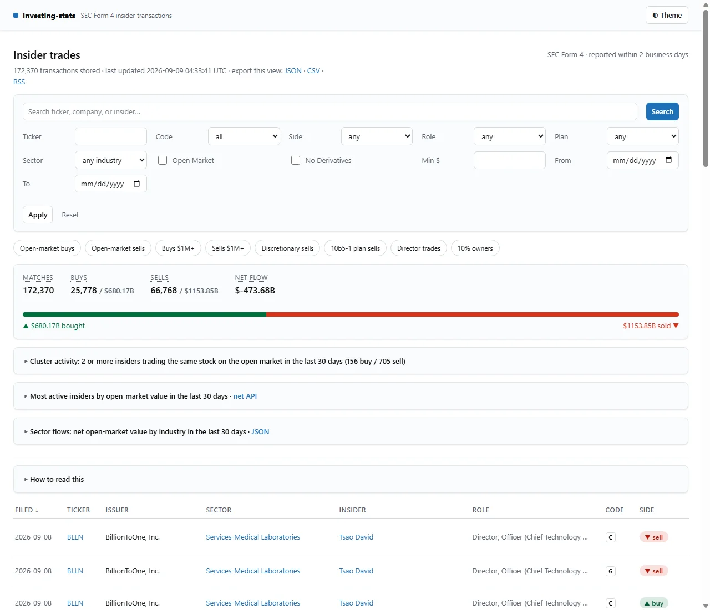

Investing Stats · Financial data
Investing Stats
I built a searchable history of SEC insider transactions, with company filters, filing details, and CSV exports.
{kind=link}

From filings to transactions
SEC Form 4 filings report changes in company insiders’ ownership. The source is a collection of XML documents; the app turns those documents into records you can search by company, date, transaction type, or value.
I built the importer, storage and query layers, and Next.js interface. The browser, API, and exports all read from the same SQLite database, so a transaction gets the same interpretation in each view.
Making imports repeatable
The importer discovers filings, finds their XML, and extracts transactions. It then adds issuer information where available and saves the records to SQLite.
Transaction IDs prevent retries from inserting duplicate rows. Historical backfills track completed days so an interrupted run can pick up the remaining dates. Concurrent import requests also share the same in-flight work within a server process.
- Discover & parse: filing feeds and indexes, ownership XML.
- Persist: transactions, issuer information, import progress.
- Query: filtered views, company histories, CSV / feeds.
When a refresh fails
A failed SEC fetch shouldn’t prevent someone from searching records already in the database. I separated refreshes from reads: scheduled imports update the history, while normal page requests use the stored data. Refresh errors appear in the health endpoint.
For deployments that refresh on read, failed attempts trigger a backoff period. That keeps every new visitor from starting another slow request during an upstream outage. An empty database still needs a successful first import before it can serve results.
Parsing missing values
XML numbers can arrive as plain values, nested values, or text inside an object. I added parsing helpers and tests for those shapes, including empty and malformed fields. Missing values stay missing instead of silently becoming zero.
I also checked how issuer data affects older transactions. A current share count can make a historical comparison misleading, so the app suppresses that comparison when the dates don’t line up. Query tests cover parameter binding and search wildcards.
Current scope
The app supports transaction search, company histories, analytics queries, and exports. It runs with SQLite on persistent storage, with no separate database service.
Data freshness depends on the imports, and issuer details aren’t always available. A remaining interface improvement is to make older or incomplete data easier to spot.
Project notes · September 2026